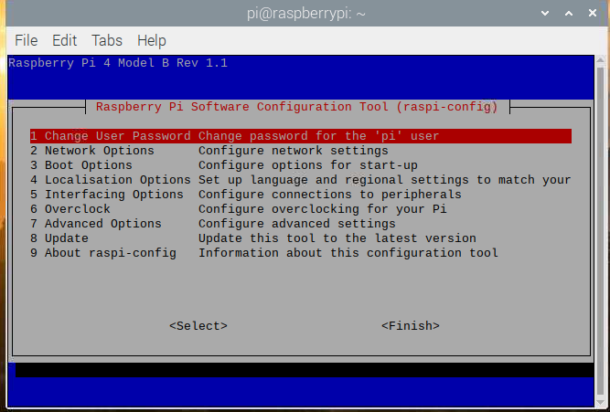

树莓派raspi-config配置¶
第一次使用树莓派的时候需要进行一些简单的配置，在终端运行如下命令进入配置界面。
sudo raspi-config

Change User Password 改变默认pi用户的密码，按回车后输入pi用户的新密码。
Network Options 网络设置选项。
Hostname 在网上邻居或者路由器能看到的主机名称
Wireless LAN Wifi连接，输入无线网络的名称和密码。
Network interface name 启用/禁用可预测网络接口名称。
Network proxy setting 配置网络代理设置
boot options 启动选项
desktop/CLI 桌面/ CLI
console 控制台
console autologin 控制台登录
desktop 桌面
desktop autologin 桌面登陆
* Wait for Network at Boot 等待开机时的网络
* Splash Screen 选择图形启动屏幕或文本引导
* Boot Order 选择网络或USB设备引导
* Boot ROM Version 选择最新或默认引导ROM软件
Internationalisation Options 国际化选项，可以更改默认语言
Change Locale 语言和区域设置。选中zh-cn然后回车
Change Timezone 设置时区，如果不进行设置，Pi的时间就显示不正常。
Change Keyboard Layout 改变键盘布局,国内多使用PC104标准键盘， 一般设置如下：
->Generic 104-key PC
->English(US)
->The default for the keyboard layout
->No compose key
->ctrl_alt_backspace Yes
* Change WLAN Country 设置网络所在的国家或地区
Interfacing Option 配置与外围设备的连接
P1 Camera 是否开启摄像头
P2 SSH 是否运行SSH登录，建议开户此选项，以后操作PI方便， 有网络就行，不用开屏幕了。
P3 VNC 是否开启VNC
P4 SPI 是否默认启动SPI内核驱动
P5 I2C是否默认启动I2C内核驱动
P6 Serial 是否默认启动串口调试
Overclock（超频可能导致树莓派损坏，如无特殊要求，不建议超频）
None 不超频，运行在700Mhz，核心频率250Mhz，内存频率400Mhz，不增加电压
Modest 适度超频，运行在800Mhz，核心频率250Mhz，内存频率400Mhz，不增加电压
Medium 中度超频，运行在900Mhz，核心频率250Mhz，内存频率450Mhz，增加电压2
High 高度超频，运行在950Mhz，核心频率250Mhz，内存频率450Mhz，增加电压6
Turbo 终极超频，运行在1000Mhz，核心频率500Mhz，内存频率600Mhz，增加电压6
Pi2 2代专有的超频，运行在1000Mhz，核心频率500Mhz，内存频率500Mhz，增加电压2
Advanced Options 高级设置
A1 Expand Filesystem Ensure that all of card storage is available 扩展文件系统确保所有卡存储都可用
A2 Overscan 是否让屏幕内容全屏显示
A3 Memory Split 内存分配，选择给GPU多少内存
A4 Audio 选择声音默认输出到模拟口还是HDMI口i
A5 Resolution 设置特定的屏幕分辨率
A6 Screen Blanking 启用/禁用屏幕消隐
A7 Pixel Doubling 启用/禁用2x2像素映射
A8 GL Driver 启用/禁用实验桌面GL驱动程序
A9 Compositor 启用/禁用xcompmgr组合管理器
AA Pi 4 Video output Pi 4的视频输出选项
AB Overlay FS 启用/禁用只读文件系统
Update 将此工具更新到最新版本
About raspi-config 关于raspi-config的信息。
若想改中文，须安装中文字体，命令如下：
sudo apt-get update
sudo apt-get install ttf-wqy-zenhei ttf-wqy-microhei
初次启动树莓派要设置Internationalisation Options选项
Change Locale设置语言，默认为英文
移动到屏幕底部，用空格键选中zh-CN.GBK GBK 和 zh_CN.UTF-8 UTF-8两项,然后按回车，然后默认语言选中zh-CN.UTF-8，然后回车。
安装拼音输入法
sudo apt-get install scim-pinyin
- change Timezone 设置时区，选择Asia（亚洲）再选择shanghai（上海）。
- Change Keyboard Layout 改变键盘布局
wifi 设置¶
运行如下命令查看网卡信息，若有wlan0则已经识别无线网卡
ifconfig
打开配置文件并修改
sudo vi /etc/wpa_supplicant/wpa_supplicant.conf
在文件的底部添加下面语句
network={
ssid=“waveshare_1013”
psk=”waveshare”
}
其中ssid为你要链接的wifi账号，psk为wifi密码。后面改为对应的wifi账号密码。 重启网卡使设置生效
sudo ifup wlan0
或者直接使用sudo reboot命令重启树莓派。